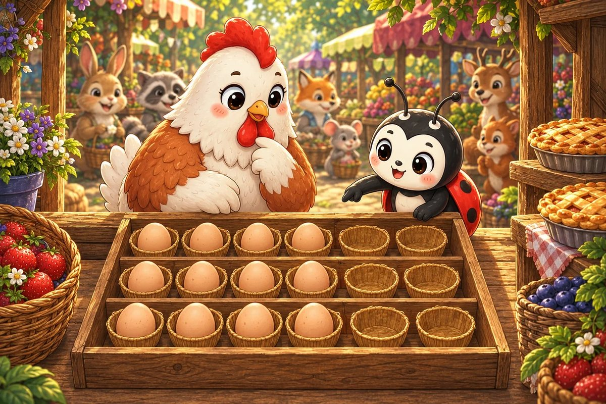
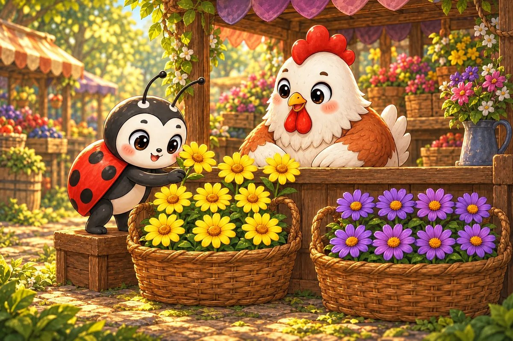
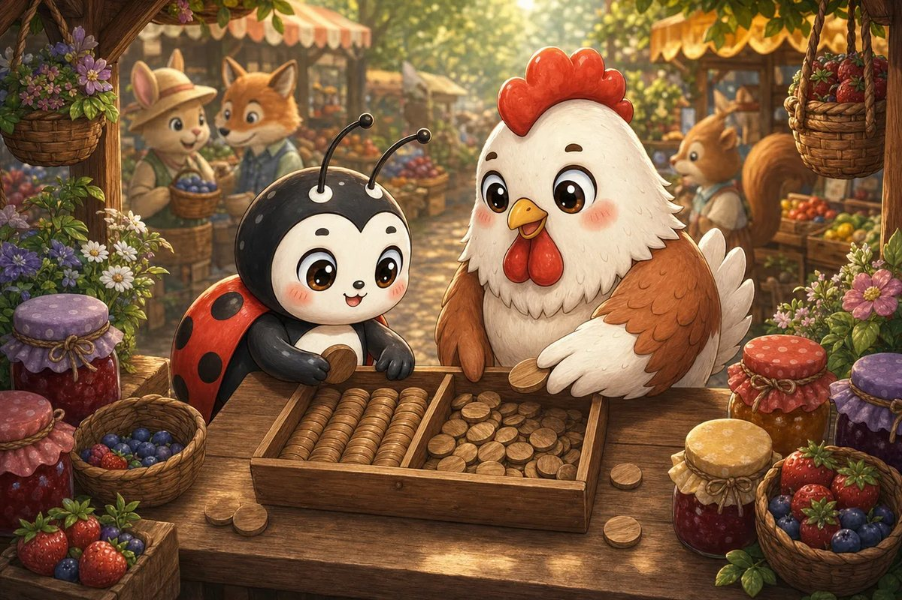
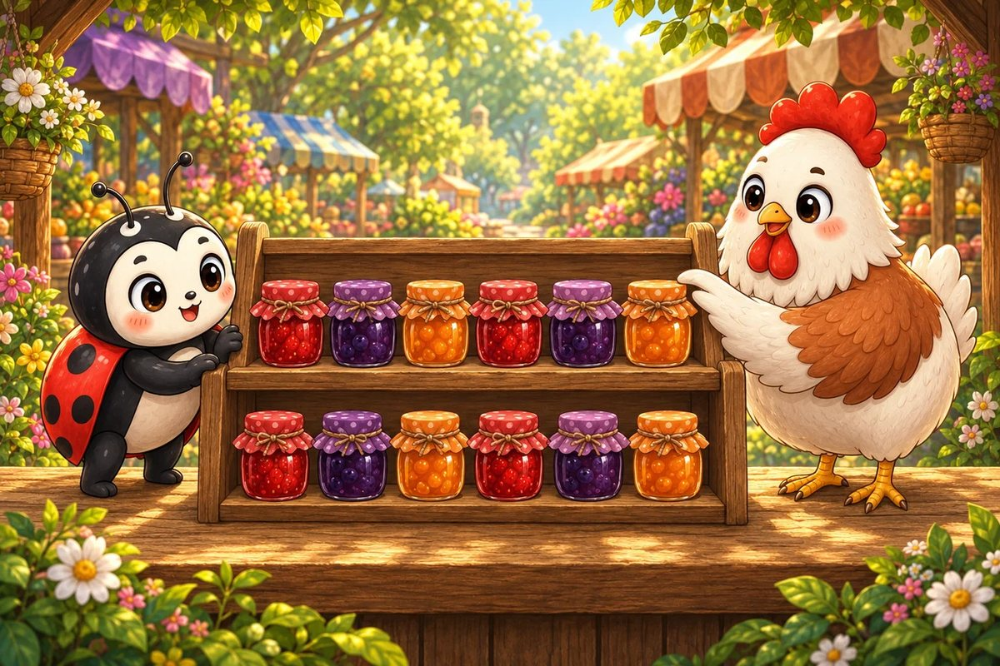
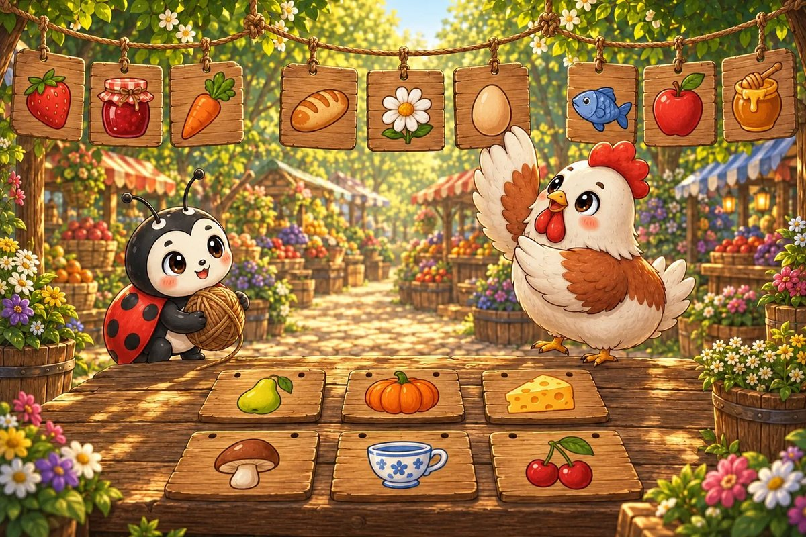
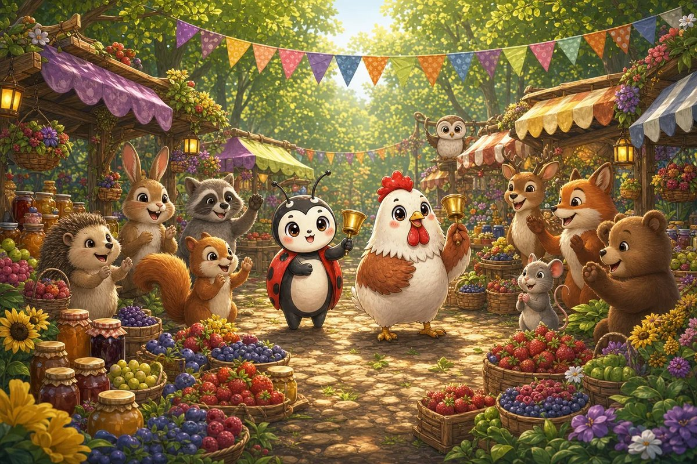

Luckybug reaches Hen-Berry’s stall just as a basket tips. Seven berries stop by the flowers and five roll beneath the table.
Try it: How many berries rolled out altogether?
10
11
12
13
Show the answer
12. Make 10 first: 7 needs 3, leaving 2. Then 10 + 2 = 12.

Page 2 of 7 · The Empty Egg Tray
Hen-Berry began with 18 eggs. Six have already gone into breakfast pies, and the morning queue is growing.
Try it: How many eggs remain?
10
11
12
14
Show the answer
12. Subtract 6 from 18: count back 18, 17, 16, 15, 14, 13, 12.

Page 3 of 7 · Two Flower Baskets
Luckybug gathers nine yellow flowers and eight purple flowers so the stall looks welcoming again.
Try it: How many flowers are in both baskets?
15
16
17
18
Show the answer
17. Move 1 from the group of 8 to make 10. Then 10 + 7 = 17.

Page 4 of 7 · Tokens for Change
The change box holds 20 wooden tokens. Seven customers use one token each before the bell rings.
Try it: How many tokens are left?
11
12
13
14
Show the answer
13. Take away 7 from 20. Count back 7 steps to reach 13.

Page 5 of 7 · Matching Jam Jars
Hen-Berry places six jam jars on each of two shelves. Luckybug checks that the shelves match.
Try it: What is double 6?
6
10
12
14
Show the answer
12. Double means two equal groups: 6 + 6 = 12.

Page 6 of 7 · A Sign for Every Stall
Fifteen picture-signs were painted, but nine are already hanging above stalls. The rest still need string.
Try it: How many signs still need string?
5
6
7
9
Show the answer
6. Find the difference: 15 − 9 = 6. You can count up from 9 to 15.

Page 7 of 7 · The Noon Bell
Eight woodland friends arrive from one path and seven from another. The market opens with every stall ready and nobody left waiting.
Try it: How many friends arrive altogether?
13
14
15
16
Show the answer
15. Eight plus 7 can become 10 + 5, which equals 15.
The end · Great maths
Seven questions, one story.
Try the story again without peeking, or print it and work the questions on paper. SnackPack Basic Math has the rest of the story shelf, daily practice and number games.